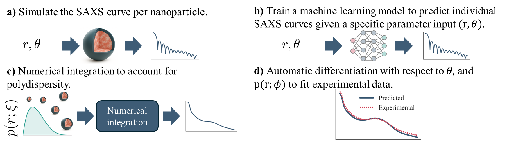

Lipid nanoparticles
Neural surrogate and multi-start fitting
What you getParameter sets that reproduce the measured curve about equally well. Where they agree, the parameter is well constrained; where they spread, it is not.
HowDetailed scattering simulations are slow. A neural network learns to approximate the simulator (a surrogate), which makes it fast enough to start the fit from a thousand points.
A differentiable machine learning small-angle X-ray scattering analysis framework for structure elucidation of lipid nanoparticles. Accepted in npj Computational Materials.
Walkthrough · Code · Data